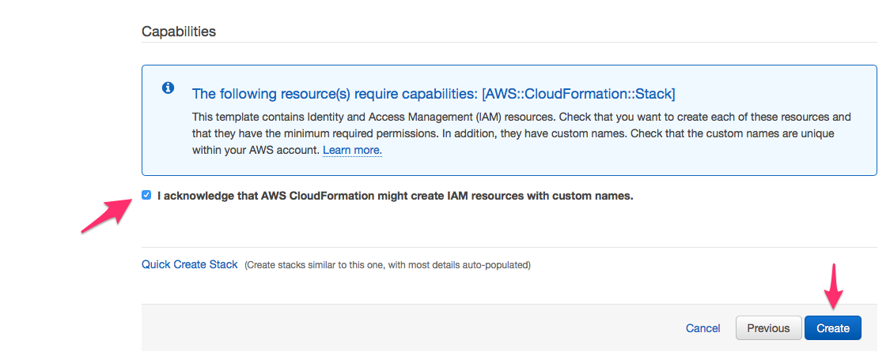

Quick Start - For rapid deployment
Step 0: Amazon VPC
While you can use an existing "default" VPC to implement deployment of your genomics environment, we strongly recommend utilizing a VPC with private subnets for processing sensitive data with AWS Batch. Doing so will restrict access to the instances from the internet, and help meet security and compliance requirements, such as dbGaP. NOTE, these private subnets must have a route to the secure route to the internet. A typical method would be to use a NAT Gateway although other options are possible.
Tip
You may also want to review the HIPAA on AWS Enterprise Accelerator and the AWS Biotech Blueprint for additional security best practices such as:
- Basic AWS Identity and Access Management (IAM) configuration with custom (IAM) policies, with associated groups, roles, and instance profiles
- Standard, external-facing Amazon Virtual Private Cloud (Amazon VPC) Multi-AZ architecture with separate subnets for different application tiers and private (back-end) subnets for application and database
- Amazon Simple Storage Service (Amazon S3) buckets for encrypted web content, logging, and backup data
- Standard Amazon VPC security groups for Amazon Elastic Compute Cloud (Amazon EC2) instances and load balancers used in the sample application stack
- A secured bastion login host to facilitate command-line Secure Shell (SSH) access to Amazon EC2 instances for troubleshooting and systems administration activities
- Logging, monitoring, and alerts using AWS CloudTrail, Amazon CloudWatch, and AWS Config rules
| Name | Description | Source | Launch Stack |
|---|---|---|---|
| VPC (Optional) | Creates a new Virtual Private Cloud to use for your genomics workflow resources. | cloud_download | play_arrow |
The above template uses the AWS Quickstart reference for a Modular and Scalable VPC Architecture and provides a networking foundation for AWS Cloud infrastructures, deploying an Amazon Virtual Private Cloud (Amazon VPC) according to AWS best-practices and guidelines.
For architectural details, best practices, step-by-step instructions, and customization options, see the deployment guide.
The VPC quick start template will deploy a VPC with 2 private subnets (the minimum recommended for the core environment) in two Availability Zones (AZs). For production environments we recommend using as many AZs as are available in your region. This allows the AWS Batch compute environments to source workers from more AZs potentially resulting in better pricing and fewer interruptions when using Spot Instances. A simple way to create a CloudFormation template for a complete VPC stack with multiple AZs is to use the AWS CDK. This example Java app will synthesize a CloudFormation template that can be used to generate a VPC with subnets in upto 6 AZs (or the maximum for the region if there are less than 6):
public class CdkVpcApp {
public static void main(final String[] args) {
App app = new App();
Environment env = Environment
.builder()
.account("my-account-number")
.region("us-east-1")
.build();
new CdkVpcStack(app, "CdkVpcStack", StackProps.builder().env(cromwell).build());
app.synth();
}
}
public class CdkVpcStack extends Stack {
public CdkVpcStack(final Construct scope, final String id) {
this(scope, id, null);
}
public CdkVpcStack(final Construct scope, final String id, final StackProps props) {
super(scope, id, props);
// The code that defines your stack goes here
Vpc vpc = Vpc.Builder.create(this, "vpc")
.maxAzs(6)
.build();
}
}
For a full set of options check out the VPC section of the CDK API Guide
Step 1: Core Environment
The CloudFormation template below will create all the AWS resources required - S3 Bucket, EC2 Launch Templates, IAM Roles, Batch Compute Environments, Batch Job Queues - needed for a genomics workflow core execution environment. It should be deployed into an existing VPC. You can use your Default VPC for testing. For production, you should use (or create) a VPC with at least two private subnets.
| Name | Description | Source | Launch Stack |
|---|---|---|---|
| Genomics Workflow Core | Create EC2 Launch Templates, AWS Batch Job Queues and Compute Environments, a secure Amazon S3 bucket, and IAM policies and roles within an existing VPC. NOTE: You must provide VPC ID, and subnet IDs. | cloud_download | play_arrow |
When launching the stack you can supply a Namespace as an optional parameter. The core can be installed multiple times in your account if needed (e.g. for use by different projects) grouped by the provided Namespace. By default, the Namespace is set to the stack name, which must be unique within an AWS region.
Prior to the final create button, be sure to acknowledge "IAM CAPABILITIES".

The template will take about 15-20 minutes to finish creating resources.
Step 2: Worklow Orchestrators
The CloudFormation templates below will create resources specific to a workflow orchestrator. All assume that you have already installed the core environment described above. When launching these stacks, you must provide a Namespace parameter. This is used to associate a workflow orchestrator stack to a specific core environment. Multiple workflow orchestrators can share a single core environment.
| Name | Description | Source | Launch Stack |
|---|---|---|---|
| AWS Step Functions | Create a Step Functions State Machine, Batch Job Definitions, and container images to run an example genomics workflow | cloud_download | play_arrow |
| Cromwell | Create resources needed to run Cromwell on AWS: an RDS Aurora database, an EC2 instance with Cromwell installed as a server, and an IAM instance profile | cloud_download | play_arrow |
| Nextflow | Create resources needed to run Nextflow on AWS: an S3 Bucket for nextflow logs and metadata, AWS Batch Job Definition for a Nextflow head node, and an IAM role for the nextflow head node job | cloud_download | play_arrow |